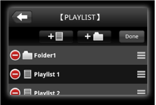

音乐管理
组织播放列表中的音乐
可根据DJ表演要求创建播放列表以组织曲库。
2轻触【PLAYLIST】类别。
将显示播放列表和文件夹列表。
3轻触 时，播放列表名称输入框将打开。
时，播放列表名称输入框将打开。
4输入播放列表名称，然后轻触[确定]。
新创建的播放列表将被添加到【PLAYLIST】类别。
5轻触新创建的播放列表以将其打开。
6轻触[编辑]，然后轻触。
用于选择想要添加曲目的面板将打开。
7轻触想要添加到播放列表的曲目。 （可选择多首曲目。 ）
8轻触[完成]以完成添加曲目。
9轻触[完成]以完成编辑播放列表。
编辑现有播放列表
1轻触【PLAYLIST】类别。
将显示播放列表和文件夹列表。
2轻触想要编辑的播放列表以将其打开。
3轻触[编辑]，然后添加或删除曲目并更改曲目顺序。

图标 | 说明 |
轻触时，用于选择想要添加到播放列表的曲目的面板将打开。 | |
拖动时，可更改曲目顺序。 | |
轻触时，将显示[移除]。 轻触[移除]以删除曲目。 |
4轻触[完成]以完成编辑播放列表。
组织播放列表
1轻触【PLAYLIST】类别。
将显示播放列表和文件夹列表。
2轻触 时，会打开文件夹名输入框。
时，会打开文件夹名输入框。
3输入文件夹名称，然后轻触[确定]。
新建的文件夹被被添加到【PLAYLIST】类别。
4轻触[编辑]，然后移动或删除播放列表或文件夹。

图标 | 说明 |
用于创建新播放列表。 | |
用于创建新文件夹。 | |
可通过拖动播放列表和文件夹进行移动。 若要将播放列表或文件夹移到较低级别的文件夹中，将其拖动至该文件夹上方。 将显示下一级。 若要将播放列表或文件夹移到较高级别的文件夹中，将其拖动至屏幕左边。 将显示上一级。 | |
长按播放列表名称时，打开播放列表名输入框。 当输入播放列表名称然后轻触[确定]，就可编辑播放列表名称。 | |
长按文件夹名称时，打开文件夹名输入框。 当输入文件夹名称然后轻触[确定]，就可编辑文件夹名称。 | |
轻触时，将显示[删除]。 轻触[删除]以删除所选播放列表或文件夹。
|